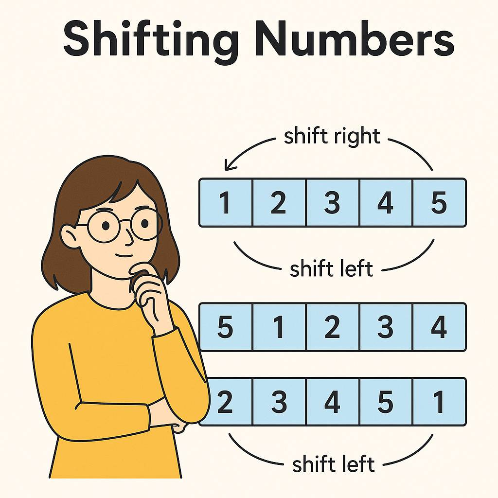

Joyce is convinced that shifting numbers in an array left or right can be a strategy to decode hidden messages. Thus, she needs your help to devise an efficient procedure to shift an array of integers k places in either direction.Shifting an array means rotating it to the left or to the right. The shift should be circular, meaning elements pushed off one end should reappear on the other.
For example, imagine that the array is [1,2,3,4,5]. Shifting it one place to the right would result in [5,1,2,3,4], while shifting it one place to the left would result in [2,3,4,5,1]. Shifting it two places to the right would result in [4,5,1,2,3].
Write a function void shift(int a[], int n, int k) that receives an array a[] of size n and an integer k. If k is positive, it should shift the array k positions to the right. If k is negative, it should shift it k positions to the left.
The following limits are guaranteed in all the test cases that will be given to your program:
| 1 ≤ a[i] ≤ 100 | Numbers in the array | |
| 1 ≤ n ≤ 100 | Size of the array | |
| -n < k < n | Number of places to shift |
You should submit a complete program (a .c file)
containing the requested function and the code being provided to
handle the input, to call your functiona and print the result. You can create additional methods, if you need them.
#include <stdio.h>
// Forward declaration of function to implement
void shift(int [], int, int);
// print an array of size n (assume size >= 1)
void print_array(int a[], int n) {
printf("[%d", a[0]);
for (int i=1; i<n; i++)
printf(",%d", a[i]);
printf("]\n");
}
int main(void) {
// Read array of n integers
int n;
scanf("%d", &n);
int a[n];
for (int i=0; i<n; i++)
scanf("%d", &a[i]);
// Read integer, shift the array and print before and after
int k;
scanf("%d", &k);
print_array(a, n);
shift(a, n, k);
printf("After shift(a,%d,%d):\n", n, k);
print_array(a, n);
return 0;
}
6 1 2 3 4 5 6 1
[1,2,3,4,5,6] After shift(a,6,1): [6,1,2,3,4,5]
8 2 4 6 8 10 12 14 16 -3
[2,4,6,8,10,12,14,16] After shift(a,8,-3): [8,10,12,14,16,2,4,6]
A Joyce está convencida de que rodar números num array para a esquerda ou para a direita pode ser uma estratégia para descodificar mensagens escondidas. Por isso, precisa da sua ajuda para criar um procedimento eficiente que rode um array de inteiros k posições em qualquer direção.
Rodar um array significa deslocá-lo para a esquerda ou para a direita. A rotação deve ser circular, ou seja, os elementos que saem de um dos extremos devem reaparecer no outro extremo.
Por exemplo, imagine que o array é [1,2,3,4,5]. Rodá-lo uma posição para a direita resultaria em [5,1,2,3,4], enquanto rodá-lo uma posição para a esquerda resultaria em [2,3,4,5,1]. Rodá-lo duas posições para a direita resultaria em [4,5,1,2,3].
Escreva uma função void shift(int a[], int n, int k) que recebe um array a[] de tamanho n e um inteiro k. Se k for positivo, deve rodar o array k posições para a direita. Se k for negativo, deve rodá-lo k posições para a esquerda.
Os seguintes limites são garantidos em todos os casos de teste fornecidos ao seu programa:
| 1 ≤ a[i] ≤ 100 | Números no array | |
| 1 ≤ n ≤ 100 | Tamanho do array | |
| -n < k < n | Número de posições a rodar |
Deve submeter um programa completo (um ficheiro .c) que contenha a função solicitada e o código fornecido para tratar a entrada de dados, chamar a sua função e imprimir o resultado. Pode criar métodos adicionais, se necessário.
#include <stdio.h>
// Forward declaration of function to implement
void shift(int [], int, int);
// print an array of size n (assume size >= 1)
void print_array(int a[], int n) {
printf("[%d", a[0]);
for (int i=1; i<n; i++)
printf(",%d", a[i]);
printf("]\n");
}
int main(void) {
// Read array of n integers
int n;
scanf("%d", &n);
int a[n];
for (int i=0; i<n; i++)
scanf("%d", &a[i]);
// Read integer, shift the array and print before and after
int k;
scanf("%d", &k);
print_array(a, n);
shift(a, n, k);
printf("After shift(a,%d,%d):\n", n, k);
print_array(a, n);
return 0;
}
6 1 2 3 4 5 6 1
[1,2,3,4,5,6] After shift(a,6,1): [6,1,2,3,4,5]
8 2 4 6 8 10 12 14 16 -3
[2,4,6,8,10,12,14,16] After shift(a,8,-3): [8,10,12,14,16,2,4,6]
Content by Fernando Silva and Vanessa Silva (DCC/FCUP), copied from the original website.